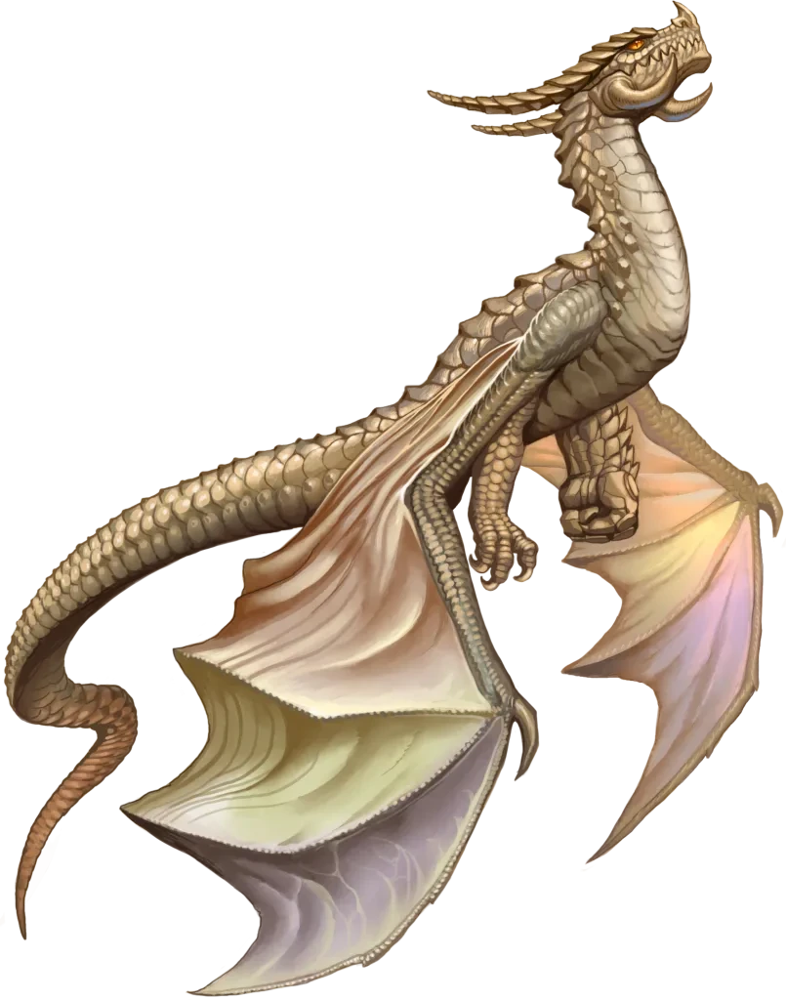
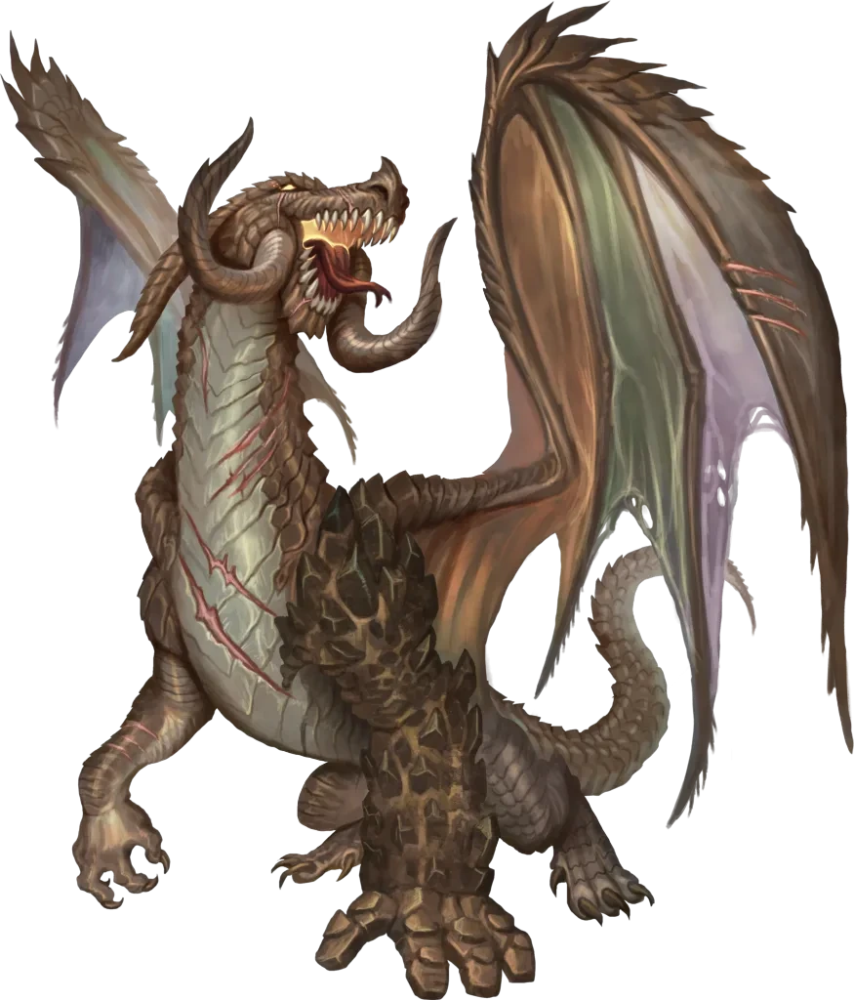

各年龄段数据卡
喧哗豪迈、生性好动的决斗龙，平生最爱之事莫过于与劲敌痛快淋漓地战上一场――无论对手是一人还是众敌，也无论自己是与同伴并肩作战还是孤身独斗。为了寻觅称心的挑战，它们甘愿远赴天涯海角；因此，决斗龙与蔚蓝龙等少数几种巨龙血统一样，鲜少盘踞在巢穴之中，反倒更常在旅途之上与人邂逅。一条典型的决斗龙之所以会长期留守巢穴，几乎唯一的理由便是抚育幼崽。不过，大多数决斗龙心中都怀揣着同一个梦想：闯出威震天下的赫赫声名，让络绎不绝的挑战者主动登门拜访；如此一来，它们便想在巢穴里待多久就待多久，同时仍能尽情享受令自己心满意足的精彩对决。能够攀上这等神圣巅峰的决斗龙寥寥无几，而它们的名字无不挂在每一条同族的嘴边――化作喧闹酒席间传颂其丰功伟绩的豪言，或是暗含艳羡的窃窃私语。 维西卡里特拉米亚克斯远古决斗龙维西卡里特拉米亚克斯的私人斗兽场每天都会吸引成千上万的观众涌入看台，观赏血腥竞技与各类娱乐演出。早在数个世纪前还远比现在年轻之时，维西卡里便以这座竞技场头号角斗士的身份，在一场决斗中赢下了整座产业。定居于此虽令生意蒸蒸日上，也让维西卡里积攒起了庞大得惊人的宝库，但她已有多年未曾遇到一个真正能满足自身好胜心的像样对手了。为此，她公开下达了一道战书：任何个人或团队只要能将她击败，便能成为斗兽场的新主人――而她也能就此卸下重担，重新踏上寻访强敌的旅途。 尽管决斗龙鳞片的色泽与质地各不相同，但它们仍有一项显著特征足以与其他巨龙区分开来：它们的一身坚皮非但不会因伤疤而脆弱，反而会随着结痂愈合变得愈发强韧；此外，反复结疤还造就了它们不对称的双臂――决斗龙会将粗壮的那一侧前臂连同单侧龙翼一并扬起格挡攻击，宛如手持斗篷护身的剑客。正因如此，青年决斗龙偶尔会故意剥去自己的鳞片，以求迅速长出一身厚实坚皮；不过，部分决斗龙家族对这种投机取巧的做法颇为不齿，认为这只会留下“名不副实”的伤疤――与其走这种捷径，倒不如堂堂正正地投身沙场。而另一些家族则将剥鳞之举视作一项象征成年的仪式。 在支撑“盾翼”抵御重击的过程中，决斗龙那条不对称的“盾臂”会一次次撕裂受创，并在岁月中不断愈合粗壮。每一次破而后立都会造就更强韧的翼膜与更硕大的前肢，直至决斗龙的左右双臂最终呈现出完全不成比例的悬殊体态。这种瘢痕增生在老远之外便清晰可辨：新生替补的鳞片除了更为坚硬之外，色泽或纹路也往往与原鳞略有差异；而这还不是它们浑身上下留下的唯一外在印记――大多数决斗龙身上还遍布着狰狞交错的明显伤疤，并对此引以为傲。至于那些鳞片脱落得整齐而均匀的决斗龙，体表倒看不出什么色差破绽；然而在同族眼中，这类不显眼的平整疤痕往往是怯懦的象征，因为它们多半是在战场之外人为弄出来的。 面对富有智慧的对手时，决斗龙最大的依仗便是对周遭各色生物本能般的空间感知力――无论身边围着多少敌人，想要包抄夹击或是分散决斗龙的注意力都难如登天。它们的咆哮足以击碎最老练战士的斗志；即便是身经百战的冒险者，在与强大的决斗龙激战正酣或是战罢归来时发觉自己心神俱颤，也是屡见不鲜之事。 巨龙比武大会决斗龙既热衷于向其他血统与种族的强者发起挑战，也同样酷爱在同族之间一较高下。每隔二十五年，决斗龙们便会齐聚已故太古决斗龙米西亚拉穆克杜备受尊崇的旧巢――传说这位先辈曾与恶魔领主、神明使徒，甚至一头从泰坦神战中幸存下来的神兽交锋决斗并全身而退。在巢穴之中，群龙会按年龄、体型与实战阅历分组，随即投入一场持续整整一季的比武锦标赛。颇为有趣的是，与巨龙霸主争霸赛不同，这场盛会并未给胜者准备任何实质性的奖品――单是胜出后足以夸耀同侪的威名，便已绰绰有余。 大多数身为施法者的决斗龙更倾向于将法术用作辅助而非主攻手段，因为它们更偏爱依靠自身的肉体武技来倾泻攻势。当然也有少数例外――这类异数往往是专精于法术决斗而非肉搏交锋的决斗龙，它们那疾风骤雨般的施法技艺常常令世间的法师与术士们叹为观止。 在决斗龙活跃的地区，世人对它们习性与能力的了解程度远超寻常同阶强横生物，其背后有着一个不同寻常的原因：大多数决斗龙极少取人性命，而是会饶过败者，任由他们活下来将亲身领教过的巨龙武勇四处传扬。决斗龙对此似乎毫不介意――倒不如说它们对此乐见其成，有时甚至会主动透露自己的情报，简直像是巴不得把双方的竞技起点拉平一般。 虽然只要听说过战龙这一冷门家族的人，大多都对决斗龙的基本能力略知一二，但若想摸清某条特定决斗龙私人的决斗信条细节，就非得靠矢志不渝的研究者深入挖掘不可了。除了手下留情饶对手一命之外，几乎每条决斗龙都会给自己设下一项或多项自我限制，以此让决斗变得更富趣味，同时磨砺自身、鞭策自己修行得更加强大。有些决斗龙绝不用尾巴攻击对手；有些绝不试图以言语或凶狠神情挫动敌方士气；还有些则绝不施展召唤盟友助战的法术。 兵刃鉴赏热衷武道的决斗龙往往渴望为自己的胜绩留存纪念战利品，因此常会收集五花八门的武器充入宝库。在大多数情况下，这些兵刃都是它们亲手挥舞着击败强敌的功勋之物；偶尔它们也会将其拿出来，作为比武大赛优胜者的奖品。不过，倘若决斗龙觉得某位败者可堪造就、日后大有成长潜力，它便可能会以这把新缴获武器的“保管人”自居，替对方暂为收存，直到昔日手下败将成长得足够强大、亲自登门赢回失落的爱兵（届时决斗龙往往还会为这把武器附上重金锻造的强化升级，以庆贺对方的成长壮举）。反过来，用另一只龙爪想想也能明白――要是决斗龙觉得某个对手不堪一击、毫无价值，那就根本犯不着收藏对方的兵刃或是庆祝这场胜利了；相反，它多半会当着败者的面直接折断那把武器，以此表达极度的不屑与嘲弄。 随着战斗风格与武道感悟日趋成熟，决斗龙为自己设下的束缚也会随岁月流转而不断调整；不过，也有不少决斗龙在初涉决斗生涯时，会先沿用从家族传统或当地决斗文化中习得的戒律。以此为起点，这些自我限制便会根据需要不断衍生与演变。举例而言，倘若一条决斗龙觉得自己陷入了固步自封的窠臼，每场战斗都靠同一套乏善可陈的老路数取胜，它便可能选择在一段时间内禁止自己使用那种无趣却屡试不爽的战术，倒逼自己开发出更宽广的战术与技艺体系――否则，在一场接一场千篇一律的无聊胜利中，那些潜能便只能白白荒废。 切记带上一名副手决斗龙深谙在决斗中由双方各自携同“决斗副手”的重要性。副手通常是所代表决斗者的挚友、亲眷或是立场偏向己方的同伴，但他们绝不会直接插手决斗本身。这样的安排让双方副手得以在赛前协商决斗条款与规则，并在对决过程中出现争议时适时作出裁定；同时，他们也充当场外监督者，确保交战双方严格遵守决斗规矩，职责颇似一对裁判。当然，对绝大多数生灵而言，敢于答应为两条怒火高涨的巨龙担任决斗副手，本身就需要莫大的勇气！ 由此可见，无论是龙学研究者还是决斗爱好者都能清楚地认识到：对决斗龙而言，立下这些规矩绝非一时心血来潮的儿戏或任性妄为。这些戒律的存在有着明确的目的――为了挑战自我、确保未来的持续成长，并让每一场交锋都堂堂正正、公平对决。 然而，追求“公平对决”并不意味着决斗龙对一切诡计或奇谋都嗤之以鼻。真正会激起决斗龙滔天怒火的，是在场外耍弄的卑劣暗算――诸如劫持对手的挚友或亲人作为人质以逼迫对方打假赛，又或是事先在对手的饮食中偷偷下毒。 反过来说，一旦正式踏入战局，只要不违背自身的个人信条，无论多么出奇制胜的战术都可以光明正大地用来对付敌人。举例而言，在交锋过程中使用毒素不过是动用手头的又一件兵器罢了，与在场外暗中投毒的无耻行径不可同日而语。同理，决斗龙十分乐意在战斗中领教可敬对手使出的精妙佯攻或虚张声势――这既能让它们磨炼洞察敌意的眼力，也能让它们借机回敬几手自家的得意巧技。对一名决斗家而言，隐藏自身的出招前兆、以假动作迷惑对手本就是天经地义的基本功；这与暗中操纵比赛结果，或是在决斗条款上欺瞒对手完全是两码事。 来者不拒：维西卡里特拉米亚克斯的斗兽场为了深入了解决斗龙，我决定亲自造访远古决斗龙维西卡里特拉米亚克斯名下的那座斗兽场。抵达斗兽场轻而易举，步入场内更是畅通无阻；可想要约到维西卡里特拉米亚克斯做一场专访？那可就棘手得多了。 最终，满头雾水的笔者不得不答应了一项颇为别致的提议：维西卡里特拉米亚克斯愿意接受我的采访，前提是我必须先同她决斗一场。我并不需要打赢――事实上，万一我真赢了反倒会惹来天大的麻烦，因为那样一来我就得被迫接盘当这座斗兽场的老板了。维西卡里特拉米亚克斯真正的意思是：既然我要邀请她踏入这位知名学者所擅长的“笔墨与言辞之竞技场”，我就必须先踏入她所钟爱的“利爪与刀剑之竞技场”，以此展现我的诚意。 具体交手的过程我就不在这里赘述令诸位生厌了……总之那是一场令我颇受挫败、自愧弗如的较量；不过维西卡里特拉米亚克斯似乎对我的表现仍颇为赞赏，因此单就达成研究目标而言，我愿称之为一场属于我的胜利。 打得兴高采烈的她向我敞开了心扉，以令人耳目一新的坦率与清晰解答了我的诸多疑问。见识到她心情大好所带来的丰硕成果后，我敢说自己真得好好感谢她提出这场切磋的要求。虽然这绝不是我自己会想到的点子，更谈不上是我的个人爱好，但为了取得最理想的研究成果，我向来不惜一切代价。我决定在日后接触其他战龙时，也将这条宝贵经验铭记在心。 ――永光贤者卡利赞德雷克斯 “百万常胜者”英格明塔兹即便在远古巨龙之中亦属传奇，“百万常胜者”英格明塔兹的神话里包含着一项震撼世人的宣称：在他逾千年的漫长生命里，他曾历经超过一百万场战斗，且未尝一败。 关于英格明塔兹的早年经历及其青年时期所打过的战斗，现存史料并不足以证实这则传说究竟是否属实。英格明塔兹本人从未公开宣称自己打赢过挑起的每一场架――至少没有任何文献记录下他曾作此表态；不过，当崇拜他的年轻决斗龙们为他冠上“百万常胜者”这一尊号后，他倒也欣然笑纳。部分学者推测，英格明塔兹在漫长的武道征途中（多半是在年轻气盛的岁月里）或许也曾吃过几场败仗，但他确确实实赢下了超过一百万场胜利。就算没有百分之百的全胜战绩，恐怕也没几个人敢否认一百万场胜利的惊人分量。 有一点是确凿无疑的：在一切已知的决斗或战役记录中，英格明塔兹确实没有任何败绩；而历年来留存下的胜绩档案之丰厚，也足以令“他打过上百万场战斗”的说法显得颇为可信。按此折算，在他漫长的一生中，平均每天都要交手好几场；当然，更符合实际情况的情形应当是他在某些日子里连战数十场，而在另一些日子里则一场未打。 尽管英格明塔兹向来不喜剖白自己的心迹，也不爱四处吹嘘胜绩，但明眼人都能看出：与其他性格各异、风格不同的决斗龙所热衷的追求不同，他确实在刻意累积一连串不败的胜场记录。 谁来定下规矩？鉴于每一场决斗都是独一无二的交锋，而充满敌意的生死决斗又往往爆发在结有宿怨、无法达成共识的死敌之间，明确决斗条款究竟如何制定便显得至关重要。理论上，只要双方同意，任何规则条款皆可成立；但决斗龙群体内部也公认着几套行之有效的标准流程――包括聘请决斗副手在内。按照惯例，通常由被挑战的一方选定决斗的时间与地点，其初衷一般是确保场地开阔干净，免受局外人或自然环境的干扰。也有一些决斗龙会利用时间和地利为自己谋取优势，例如刻意让阳光直射对手的双眼；但这种做法在同族眼中通常有失风度，因此更多见于它们向其他巨龙血统或外族生灵发起挑战之时。 举例来说，许多决斗龙都渴望直面最具挑战性的强敌，投身于有输有赢的苦战之中，并在胜败交替间愈战愈强。这甚至称得上是决斗龙群体中的主流观念，与它们的生理构造息息相关：战斗留下的伤疤――尤其是富有启发意义的败仗所留下的伤疤――能让你变得更加强大。观察家与学者们之所以断定英格明塔兹在刻意经营自己的不败纪录，依据恰恰在于他“选择不打哪些仗”。倘若他纯粹只想见仗就打，且实力强横到无论面对谁都能稳操胜券，那为何历年来的巨龙霸主争霸赛与决斗龙比武大会他没有场场参加并包揽魁首呢？恰恰相反，根据史料记载，他一次也未曾报名参加过。 同样，史册中也找不到任何英格明塔兹与已故太古决斗龙米西亚拉穆克杜交手决斗的记录――后者的赫赫威名并非源于胜场数量，而是源于她敢于挑战种种不可思议的恐怖存在并生还归来的惊人胆魄。在许多决斗龙看来，辈分较轻的英格明塔兹去向名声更盛的米西亚拉穆克杜发起决斗原本再顺理成章不过；那也必定是一场令所有同族翘首以盼、争相押注赌哪位太古龙能笑到最后的巅峰对决。 决斗场地其他某些巨龙传承偏爱狭窄曲折、机关密布的坑道，以免成群结队的入侵者凭人数优势围攻自己；决斗龙却截然不同，它们的巢穴里无一例外都配有一片足够宽敞开阔、堪作正规决斗场的区域。这是因为它们对痛快战上一场的渴望远远高于对安防隐患的顾虑。倘若一处原本十分理想的巢穴唯独缺少合适的决斗设施，决斗龙也绝不介意出资雇佣精通强效土系魔法或土木工程的承包商进入巢穴，帮自己加建出一座梦寐以求的决斗场。 然而，这场梦幻对决终究未能上演，因为不等英格明塔兹发起挑战，米西亚拉穆克杜便已陨落。这一系列行径令部分学者相信：尽管英格明塔兹表面上豪气干云，骨子里却远比看上去精于算计，其城府更远胜寻常决斗龙；相比之下，米西亚拉穆克杜才更符合古典决斗龙心目中一头理想太古龙应有的典范。 不过，这种看法也只是众说纷纭中的一家之言；在英格明塔兹最狂热的崇拜者们眼中，单是动一动这种念头就无异于亵渎神明――毕竟这几乎就等于拐弯抹角地指责他们的偶像贪生怕死，只不过没胆量当着他的面直说罢了。 英格明塔兹本人对此事三缄其口，而且出了名地难以约访。正因如此，我们目前掌握的大部分资料都只是从旁观者以及在决斗中败给这位强横至高古龙的手下败将口中听来的二手消息。 饕餮斗胆决斗决斗龙哪怕在饮食之道上也争强好胜，有时甚至会相约展开所谓的“饕餮斗胆决斗”――彼此挑战烹制并吞下极具挑战性的菜肴，无论是因为烹饪工序繁难、滋味怪诞、辛辣刺骨、暗藏毒性，还是任何其他令这道菜难以下咽的特质。落败的一方必须履行决斗前事先约定的惩罚：赌注小到为比拼中消耗的所有昂贵食材买单，大到向获胜的决斗龙割让领地。不过，这类餐桌决斗十有八九都只是小赌怡情，其主要原因再简单不过：一旦真正牵涉重大利益，绝大多数决斗龙还是更愿意以比武审判一决雌雄，而非在锅碗瓢盆间分胜负。 |
 决斗龙  决斗龙 |